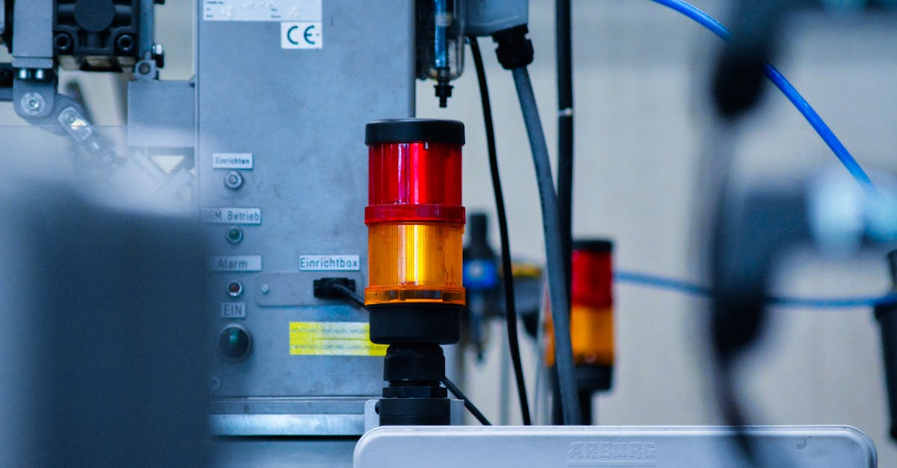

Une Hausse Spectaculaire qui Captive les Marchés
Le titre de Keyence Corp. a connu une envolée remarquable, grimpant de 16% pour atteindre sa limite quotidienne, marquant ainsi le gain le plus important enregistré depuis août 2024. Cette performance exceptionnelle n'est pas le fruit du hasard, mais la conséquence directe d'une publication de résultats trimestriels qui a largement dépassé les attentes des analystes financiers. Le géant japonais, spécialisé dans la fabrication de capteurs pour l'automatisation industrielle, a démontré une fois de plus sa résilience et sa capacité à générer de la valeur pour ses actionnaires. L'annonce simultanée d'un projet visant à modifier ses statuts pour permettre le rachat de ses propres actions a agi comme un catalyseur supplémentaire, signalant une confiance accrue de la direction dans les perspectives futures de l'entreprise. Les investisseurs, toujours à l'affût des signes de vigueur économique et des stratégies favorisant la rentabilité du capital, ont réagi de manière véhémente. Cette réaction traduit une confiance renouvelée dans le modèle économique de Keyence et dans sa capacité à naviguer dans un environnement économique mondial en constante mutation. La question qui taraude désormais les observateurs est de savoir si cet élan peut être maintenu sur le moyen et long terme. Les fondamentaux solides de l'entreprise, couplés à une politique proactive de retour aux actionnaires, semblent toutefois plaider en faveur d'une tendance haussière durable. Dans le monde de l'investissement, de telles performances sont rares et méritent une analyse approfondie pour en comprendre les ressorts et les implications potentielles pour d'autres acteurs du marché, y compris ceux qui opèrent dans des secteurs technologiques de pointe où l'automatisation joue un rôle clé, comme le trading algorithmique de cryptomonnaies.
👉 À lire : La Joie de Perdre : Une Leçon pour le Trading IA

Les Résultats Financiers : Au-delà des Prévisions
Le cœur de cette performance boursière réside dans la publication des résultats financiers du dernier trimestre. Keyence a non seulement atteint, mais surtout dépassé les estimations de bénéfice opérationnel établies par les analystes. Ce dépassement, souvent appelé 'earnings beat', est un signal fort envoyé au marché. Il témoigne d'une gestion rigoureuse, d'une stratégie commerciale efficace et, potentiellement, d'une demande soutenue pour les produits de haute technologie de l'entreprise. Les capteurs et systèmes d'automatisation industrielle de Keyence sont des composants essentiels dans de nombreuses chaînes de production modernes, allant de l'automobile à l'électronique en passant par l'emballage. La capacité de l'entreprise à maintenir et même à accroître sa rentabilité dans un contexte macroéconomique parfois incertain souligne la pertinence de ses offres et la solidité de sa position concurrentielle. Les chiffres précis, bien que non détaillés ici, font état d'une croissance organique significative et d'une amélioration des marges. Ces éléments combinés créent un environnement propice à la confiance des investisseurs. Les analystes financiers, qui scrutaient attentivement ces données, ont rapidement revu à la hausse leurs anticipations, considérant que Keyence est bien positionnée pour continuer sur sa lancée. Cette surperformance n'est pas seulement une question de chiffres ; elle reflète une exécution opérationnelle de premier plan. Dans un monde où l'efficacité et la précision sont primordiales, l'expertise de Keyence dans ces domaines se traduit directement par des résultats financiers impressionnants, un principe qui résonne fortement avec les stratégies d'optimisation utilisées dans le trading haute fréquence et l'IA appliquée aux marchés financiers.
👉 À lire : L'IA, bulle ou révolution ? Core Scientific lève 3,3 Mds $ pour l'avenir.
Le Plan de Rachat d'Actions : Un Signal de Confiance Stratégique
L'annonce d'un projet visant à permettre le rachat d'actions propres par Keyence Corp. a constitué le second pilier de cette réaction positive du marché. Cette démarche, qui nécessitera l'approbation des actionnaires lors de la prochaine assemblée générale, est souvent interprétée comme un signe de maturité et de confiance de la part de la direction. En rachetant ses propres titres, une entreprise peut plusieurs choses :
- Augmenter le bénéfice par action (BPA) : En réduisant le nombre d'actions en circulation, le bénéfice net est réparti sur un plus petit nombre de titres, ce qui fait mécaniquement grimper le BPA.
- Signaler une sous-évaluation : La direction peut estimer que l'action est actuellement sous-évaluée par le marché, et le rachat est une manière d'en tirer parti.
- Retour de capital aux actionnaires : Alternativement au dividende, le rachat peut être une méthode plus fiscalement avantageuse pour certains investisseurs.
- Flexibilité financière : Disposer d'un programme de rachat offre une flexibilité pour gérer la structure du capital.
Dans le cas de Keyence, cette décision souligne une confiance profonde dans la capacité de l'entreprise à générer des flux de trésorerie suffisants pour financer ces rachats tout en poursuivant ses investissements stratégiques. C'est un message fort envoyé aux marchés : la direction est optimiste quant à l'avenir et cherche activement à maximiser la valeur pour les actionnaires. Ce type de décision stratégique, bien que relevant de la finance d'entreprise traditionnelle, trouve un écho dans les principes d'optimisation de capital et de retour sur investissement qui sont au cœur des stratégies de trading les plus sophistiquées, y compris celles qui s'appuient sur l'intelligence artificielle pour identifier les opportunités de marché.

Keyence et l'Automatisation : Un Lien Indéfectible
Il est impossible de parler de Keyence sans évoquer son cœur de métier : les capteurs et systèmes d'automatisation industrielle. L'entreprise est un leader mondial dans ce domaine, fournissant des solutions qui améliorent la précision, la vitesse et l'efficacité des processus de fabrication. Ces technologies sont devenues indispensables dans presque tous les secteurs industriels. Pensez aux chaînes de production automobile, où des capteurs détectent les moindres défauts, ou aux usines d'électronique, où des systèmes de vision artificielle inspectent les composants à une vitesse fulgurante. Keyence ne se contente pas de fabriquer des composants ; elle offre des solutions intégrées qui aident les entreprises à optimiser leurs opérations. Cette expertise est particulièrement pertinente dans le contexte actuel de l'industrie 4.0, où la digitalisation et l'automatisation sont au premier plan. Les données collectées par ces capteurs sont cruciales pour le pilotage des processus, l'analyse de performance et, de plus en plus, pour l'entraînement d'algorithmes d'intelligence artificielle. Imaginez l'impact de capteurs ultra-précis sur la qualité des données utilisées pour entraîner un agent IA de trading. Une meilleure qualité de données d'entrée, qu'elles proviennent de capteurs industriels ou de flux de marché, conduit inévitablement à de meilleures performances. La capacité de Keyence à innover dans ce domaine est un moteur clé de sa croissance et de sa rentabilité, et explique en grande partie pourquoi le marché a réagi si positivement à ses résultats. C'est cette maîtrise technologique qui lui permet de rester en tête, dans un secteur en perpétuelle évolution, où la performance est le maître mot.
L'IA et le Trading : Une Synergie Émergente
L'actualité de Keyence, bien que centrée sur l'industrie manufacturière, offre des parallèles intéressants avec le monde du trading algorithmique et de l'intelligence artificielle, notre cœur de métier chez CryptoMind AI. L'automatisation, la précision des données, l'optimisation des processus et la recherche constante de performance sont des dénominateurs communs. Les agents IA de trading, tels que ceux que nous développons, fonctionnent sur des principes similaires. Ils analysent d'énormes volumes de données de marché 24h/24 et 24h/24, identifient des schémas complexes, exécutent des transactions à haute fréquence et cherchent continuellement à optimiser leurs stratégies pour maximiser les rendements. Tout comme les capteurs de Keyence améliorent l'efficacité des usines, nos agents IA visent à améliorer l'efficacité des stratégies de trading. La surperformance de Keyence, résultant d'une technologie de pointe et d'une gestion efficace, peut être vue comme une illustration de ce que l'on peut accomplir en appliquant l'intelligence et l'automatisation aux défis complexes. Dans le trading de cryptomonnaies, où la volatilité est élevée et les marchés ouverts en permanence, la nécessité d'une surveillance et d'une exécution automatisées est encore plus critique. Un agent IA ne dort jamais, ne se fatigue pas et n'est pas sujet aux émotions humaines, des facteurs qui peuvent souvent nuire aux performances des traders traditionnels. L'histoire de Keyence nous rappelle que l'investissement dans la technologie et l'expertise, qu'il s'agisse de capteurs industriels ou d'algorithmes de trading, est la clé du succès à long terme. C'est cette recherche incessante d'optimisation qui nous motive à développer des solutions toujours plus performantes pour nos utilisateurs.
Analyse de l'Impact sur les Investisseurs et le Marché
La hausse de 16% du titre Keyence n'est pas anodine. Elle représente une création de valeur significative pour les actionnaires existants et attire potentiellement de nouveaux investisseurs. Ce mouvement spectaculaire peut avoir plusieurs effets sur le marché :
- Effet d'entraînement : Les performances exceptionnelles d'une entreprise peuvent inciter les investisseurs à examiner de plus près d'autres sociétés du même secteur ou ayant des modèles économiques similaires. Dans le cas de Keyence, cela pourrait stimuler l'intérêt pour les entreprises spécialisées dans l'automatisation industrielle ou les technologies de pointe.
- Confiance générale : Une telle performance peut renforcer la confiance globale des investisseurs dans le marché boursier japonais ou dans le secteur technologique en général, encourageant ainsi davantage d'investissements.
- Réévaluation des multiples : Les analystes pourraient être amenés à revoir à la hausse les multiples de valorisation appliqués à Keyence et à ses pairs, considérant que la qualité de ses bénéfices et ses perspectives de croissance justifient une prime.
- Stratégies de trading : Les traders, qu'ils soient humains ou algorithmiques, analysent ces mouvements pour identifier des tendances, des points d'entrée ou de sortie, et ajuster leurs portefeuilles. Les annonces de rachats d'actions sont souvent des signaux que les algorithmes sont programmés pour identifier et exploiter.
Pour les investisseurs individuels, il est crucial de ne pas se laisser emporter par l'euphorie. Si la performance de Keyence est impressionnante, une analyse fondamentale approfondie reste indispensable avant toute décision d'investissement. Néanmoins, cette actualité illustre parfaitement comment une combinaison de résultats solides et de décisions stratégiques intelligentes peut mener à des rendements exceptionnels. C'est une leçon précieuse pour quiconque s'intéresse aux mécanismes du marché financier, y compris dans le domaine naissant mais dynamique des cryptomonnaies.
Perspectives d'Avenir pour Keyence et l'Industrie
Au-delà de la réaction immédiate du marché, quelles sont les perspectives à plus long terme pour Keyence ? L'entreprise opère dans des secteurs porteurs : l'automatisation industrielle et la digitalisation sont des tendances de fond qui devraient continuer à soutenir la demande pour ses produits. La transition vers l'Industrie 4.0, l'essor de la robotique, et la nécessité croissante d'améliorer l'efficacité et la qualité dans la production mondiale sont autant de facteurs favorables. De plus, la stratégie de rachat d'actions, si elle est menée à bien, pourrait continuer à soutenir le cours de l'action en améliorant sa structure financière et sa rentabilité par action. Bien sûr, des défis subsistent. La concurrence est vive dans le domaine des capteurs et de l'automatisation, et les cycles économiques peuvent affecter la demande des clients. Les tensions géopolitiques et les perturbations des chaînes d'approvisionnement mondiales restent également des risques à surveiller. Cependant, la force historique de Keyence réside dans sa capacité d'innovation et son adaptation rapide aux besoins du marché. L'entreprise semble bien armée pour faire face à ces défis. Son engagement envers la recherche et le développement, couplé à une gestion financière prudente, devrait lui permettre de maintenir sa trajectoire de croissance. En observant Keyence, on peut tirer des enseignements sur la manière dont les entreprises technologiques, en se concentrant sur la valeur ajoutée et l'efficacité, peuvent prospérer. Ce modèle de performance durable est une source d'inspiration, même pour des secteurs aussi différents que le trading de cryptomonnaies assisté par IA, où l'innovation constante est également la clé du succès.
Leçons pour le Trading Crypto avec IA
L'événement Keyence, bien que distinct du monde des cryptomonnaies, offre des leçons précieuses pour les utilisateurs de nos agents IA de trading. Premièrement, la performance exceptionnelle découle d'une combinaison de facteurs fondamentaux solides (résultats dépassant les attentes) et de décisions stratégiques (plan de rachat d'actions). De la même manière, un agent IA de trading performant repose sur :
- Algorithmes robustes : Des modèles mathématiques et statistiques éprouvés qui analysent le marché avec précision.
- Données de haute qualité : L'accès à des flux de données fiables et rapides, essentiels pour une prise de décision éclairée.
- Gestion des risques : Des paramètres bien définis pour limiter les pertes potentielles, tout comme une entreprise gère son capital.
- Adaptabilité : La capacité de l'IA à ajuster ses stratégies en fonction des conditions changeantes du marché, une forme d'agilité comparable à celle de Keyence dans son secteur.
Deuxièmement, l'annonce du rachat d'actions par Keyence a renforcé la confiance des investisseurs. Dans le trading crypto, la confiance est également un facteur clé. Elle est bâtie sur la transparence des plateformes, la fiabilité des algorithmes et la démonstration constante de leur capacité à générer des profits. Les agents IA de CryptoMind AI sont conçus pour offrir cette fiabilité, en opérant 24h/24 et 7j/7, sans émotions, et en s'appuyant sur une analyse quantitative rigoureuse. Comme Keyence optimise ses processus industriels, nos agents optimisent les stratégies de trading pour naviguer dans la volatilité des marchés cryptos. L'objectif est le même : maximiser le retour sur investissement grâce à la technologie et à une exécution sans faille. L'histoire de Keyence nous rappelle que l'excellence opérationnelle et la vision stratégique sont récompensées, que ce soit dans la fabrication de capteurs ou dans le trading algorithmique.
Conclusion
La performance spectaculaire de Keyence Corp. sur les marchés financiers, propulsée par des résultats trimestriels exceptionnels et l'annonce d'un programme de rachat d'actions, est un témoignage éloquent de la puissance de l'innovation technologique et de la gestion stratégique. Le géant japonais de l'automatisation industrielle a une fois de plus démontré sa capacité à surpasser les attentes et à créer une valeur significative pour ses actionnaires. Cette actualité résonne particulièrement avec notre mission chez CryptoMind AI : exploiter la puissance de l'intelligence artificielle pour optimiser les performances dans des marchés complexes et en évolution rapide. Tout comme les capteurs de Keyence améliorent l'efficacité et la précision des processus industriels, nos agents IA de trading visent à apporter une efficacité et une précision similaires aux stratégies d'investissement sur les marchés des cryptomonnaies. L'automatisation, l'analyse de données en temps réel et l'exécution sans émotion sont les piliers sur lesquels repose notre technologie, offrant une alternative performante aux approches de trading traditionnelles. L'histoire de Keyence nous rappelle que dans tous les domaines, qu'il s'agisse de l'industrie manufacturière ou de la finance, l'investissement dans la technologie de pointe et une stratégie claire sont les clés du succès à long terme. Nous sommes convaincus que l'avenir du trading réside dans l'intelligence artificielle, et nous nous engageons à rester à la pointe de cette révolution pour offrir à nos utilisateurs les outils les plus performants.